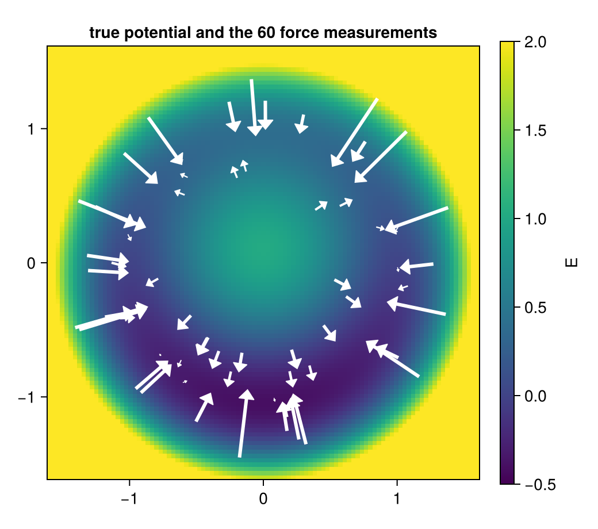
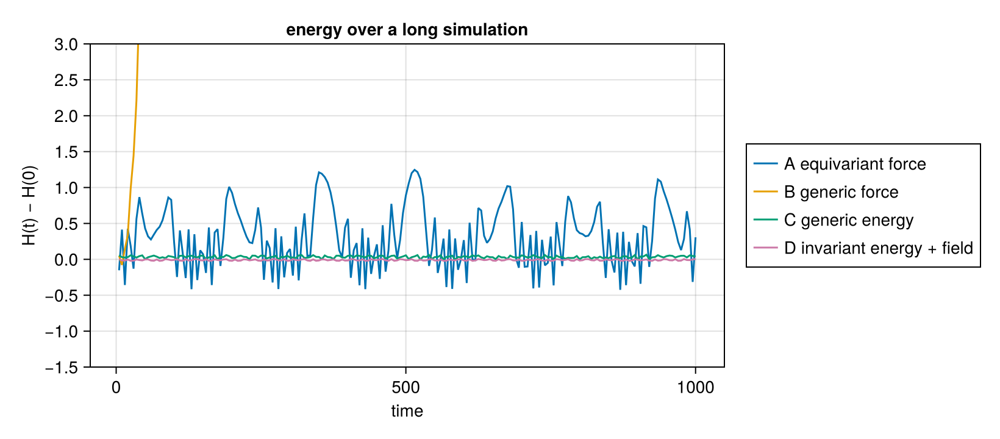
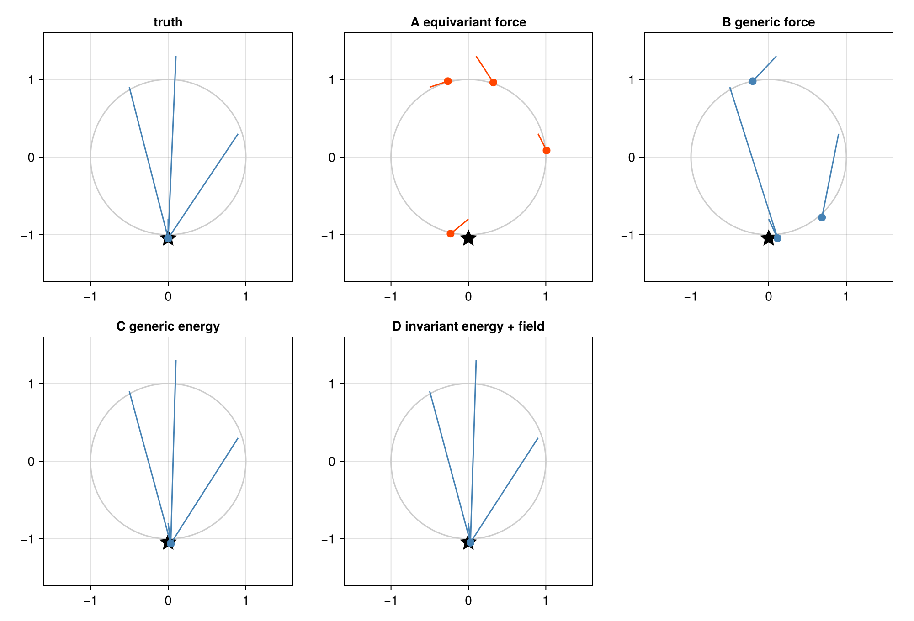
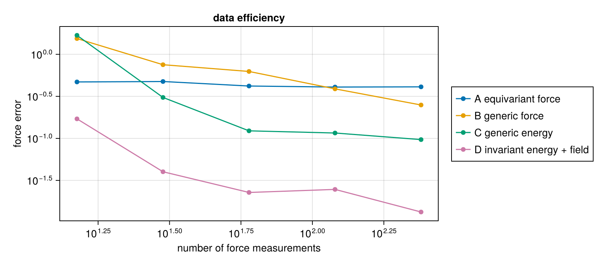

Symmetry is not a law: learning a force field
Download as a Jupyter notebook
Geometric deep learning (Bronstein et al., 2021) builds the symmetry of a problem into a model: rotate the input, the output rotates with it. A physical law is a different kind of statement. A force field that comes from a potential satisfies the relation $F = -\nabla E$ at every point, and a model can respect every symmetry of a problem while violating that relation everywhere.
This tutorial measures the difference on a small problem in which the potential is not rotation-invariant: a rotation-invariant part plus an external field that breaks the symmetry. Four model classes are fitted to the same noisy force measurements:
| the model predicts | symmetry | law $F = -\nabla E$ | |
|---|---|---|---|
| A | the force, rotation-equivariant | built in | not imposed |
| B | the force, any vector field | none | not imposed |
| C | an energy, $F = -\nabla E$ | none | built in |
| D | invariant energy + a symmetry-breaking term, $F = -\nabla E$ | where it holds | built in |
A is pure geometric deep learning. D combines geometry and the relation: the symmetry where the physics has it, a separate term where the physics breaks it, and the law as the parametrisation. The models are linear in their parameters, so each fit is one least-squares solve and the comparison is about model classes, not about optimisers. The background is the vault note Geometric Deep Learning and Physical Laws.
using ImplicitLayers, LinearAlgebra, Random, Statistics, Printf
using CairoMakieThe system
One particle in the plane, with a "Mexican hat" potential (rotation-invariant, minimum on the unit circle) and a uniform field of strength $g$ pulling downwards:
\[E(x) = (\lVert x\rVert^2 - 1)^2 + g\,x_2, \qquad F(x) = -\nabla E(x) = -4(\lVert x\rVert^2 - 1)\,x - g\,e_2 .\]
Without the field every point of the circle is a resting point. With it, the particle rests at the bottom, near $(0, -1.05)$.
const g = 0.4
E_true(x) = (sum(abs2, x) - 1)^2 + g * x[2]
F_true(x) = -4 * (sum(abs2, x) - 1) .* x .- [0.0, g]
function positions(rng, n) # uniform in the annulus 0.5 ≤ r ≤ 1.5
r = sqrt.(0.25 .+ 2.0 .* rand(rng, n))
φ = 2π .* rand(rng, n)
return [[r[i] * cos(φ[i]), r[i] * sin(φ[i])] for i in 1:n]
end
measure(rng, xs) = [F_true(x) .+ 0.05 .* randn(rng, 2) for x in xs] # noisy force sensor
rng = Xoshiro(0)
xs = positions(rng, 60)
Fs = measure(rng, xs)
grid = range(-1.6, 1.6; length = 101)
fig = Figure(size = (520, 460))
ax = Axis(fig[1, 1]; aspect = DataAspect(), title = "true potential and the 60 force measurements")
hm = heatmap!(ax, grid, grid, [E_true([a, b]) for a in grid, b in grid]; colormap = :viridis, colorrange = (-0.5, 2))
arrows2d!(ax, Point2f.(xs), 0.08 .* Vec2f.(Fs); color = :white)
Colorbar(fig[1, 2], hm; label = "E")
fig
Four model classes
Each model is a design matrix: at a position $x$ it maps the parameter vector to the predicted force, $F_\theta(x) = A(x)\,\theta$. Fitting is ridge regression on the stacked force measurements.
const RC = range(0.2, 1.8; length = 9) # radial basis centres
const RW = 0.2
Φ(r, c) = exp(-(r - c)^2 / (2RW^2))
dΦ(r, c) = -(r - c) / RW^2 * Φ(r, c)
const GC = [[a, b] for a in range(-1.6, 1.6; length = 7) for b in range(-1.6, 1.6; length = 7)]
const GW = 0.45 # generic 2-D basis: a 7×7 grid of bumps
ψ(x, c) = exp(-sum(abs2, x .- c) / (2GW^2))
∇ψ(x, c) = -(x .- c) ./ GW^2 .* ψ(x, c)
perp(x) = [-x[2], x[1]]A. Equivariant force. Every rotation-equivariant vector field in the plane has the form $F(x) = a(r)\,\hat x + b(r)\,\hat x^\perp$: a radial part and a rotational part, each a function of the radius alone. This is the whole equivariant class, not a convenient subset.
A_eq(x) = (r = norm(x); hcat([Φ(r, c) .* x ./ r for c in RC]..., [Φ(r, c) .* perp(x) ./ r for c in RC]...))A_eq (generic function with 1 method)B. Generic force. Each component of the force is a free combination of the 2-D bumps.
A_force(x) = (p = [ψ(x, c) for c in GC]; [p' zeros(1, length(GC)); zeros(1, length(GC)) p'])A_force (generic function with 1 method)C. Generic energy. $E_\theta(x) = \sum_j \theta_j\,\psi_j(x)$ and the force is its negative gradient. Whatever $\theta$ is, the force field is conservative.
A_energy(x) = -hcat([∇ψ(x, c) for c in GC]...)A_energy (generic function with 1 method)D. Invariant energy plus a symmetry-breaking term. $E_\theta(x) = \sum_k a_k\,\Phi_k(\lVert x\rVert) + b^\top x$: a rotation-invariant energy (geometry, where the physics has it) plus a linear term, the most general uniform field (where the physics breaks the symmetry). Eleven parameters.
A_comb(x) = (r = norm(x); hcat(-hcat([dΦ(r, c) .* x ./ r for c in RC]...), -Matrix(1.0I, 2, 2)))
models = ["A equivariant force" => A_eq, "B generic force" => A_force,
"C generic energy" => A_energy, "D invariant energy + field" => A_comb]
fit(A, xs, Fs; λ = 1e-4) = (M = reduce(vcat, A.(xs)); (M'M + λ * I) \ (M' * reduce(vcat, Fs)))
θs = Dict(name => fit(A, xs, Fs) for (name, A) in models)
force(name, x) = Dict(models)[name](x) * θs[name]Single-shot accuracy
The error of the predicted force at 2000 fresh positions, and the work around the unit circle, $\oint F\cdot dl$. For a force that comes from a potential the work around any closed loop is exactly zero; a nonzero value means a perpetual-motion machine.
xtest = positions(Xoshiro(9), 2000)
rmse(f) = sqrt(mean(sum(abs2, f(x) .- F_true(x)) for x in xtest))
function loop_work(f; n = 2000)
φs = range(0, 2π; length = n + 1)[1:n]
return sum(dot(f([cos(φ), sin(φ)]), [-sin(φ), cos(φ)]) * 2π / n for φ in φs)
end
for (name, A) in models
@printf "%-28s %3d parameters force error %.3f loop work %+.4f\n" name length(θs[name]) rmse(x -> force(name, x)) loop_work(x -> force(name, x))
endA equivariant force 18 parameters force error 0.419 loop work +0.2396
B generic force 98 parameters force error 0.571 loop work +0.2298
C generic energy 49 parameters force error 0.118 loop work +0.0000
D invariant energy + field 11 parameters force error 0.026 loop work +0.0000
Three observations:
- A cannot fit the field. A uniform field is not rotation-equivariant, so it lies outside class A, and no amount of data changes that. Worse, A's loop work is not zero: the misfit leaks into the rotational part $b(r)$, and the fitted field circulates. The symmetry was imposed, the law was not, and the broken symmetry made the model break the law.
- B fits less well than C with twice the parameters, and does work around the loop.
- C and D conserve energy exactly, by construction, and D is the most accurate with the fewest parameters.
Long horizons
A small violation of the law per step compounds over a long simulation. Integrate Newton's equations $\ddot x = F(x)$ with velocity Verlet (Verlet, 1967) (a scheme that conserves energy well for any conservative force) for $10^5$ steps, and track the true energy $H = \tfrac12\lVert v\rVert^2 + E(x)$.
function energy_trace(f; dt = 0.01, steps = 100_000)
x, v = [1.0, 0.0], [0.0, 0.8]
a = f(x)
H₀ = 0.5 * sum(abs2, v) + E_true(x)
t, ΔH = Float64[], Float64[]
for k in 1:steps
v = v .+ 0.5dt .* a
x = x .+ dt .* v
a = f(x)
v = v .+ 0.5dt .* a
if k % 500 == 0
push!(t, k * dt); push!(ΔH, 0.5 * sum(abs2, v) + E_true(x) - H₀)
end
norm(x) > 5 && break # escaped: the simulation blew up
end
return t, ΔH
end
fig = Figure(size = (820, 360))
ax = Axis(fig[1, 1]; xlabel = "time", ylabel = "H(t) − H(0)", title = "energy over a long simulation")
for (name, _) in models
t, ΔH = energy_trace(x -> force(name, x))
lines!(ax, t, ΔH; label = name)
t[end] < 999 && @printf "%s: blew up at t = %.0f\n" name t[end]
end
ylims!(ax, -1.5, 3)
Legend(fig[1, 2], ax)
fig
The energy models C and D oscillate around their starting energy, as an exact conservative system integrated by Verlet should; their swings (about 0.06 for C, 0.02 for D) are the fitting error. The direct force models do not: A's energy swings by up to 1.2, sixty times D's, as its rotational part alternately pushes and brakes the particle, and B pumps energy into the particle until it escapes the well at $t \approx 60$. This is the failure reported for direct-force interatomic potentials by Bigi et al. (2025): equivariant, accurate per prediction, unstable in molecular dynamics.
A relational query: where does the particle rest?
A resting point is a stable root of the force, $F(x) = 0$ with $E$ locally minimal. It is found by root-finding, the same inference an implicit model uses. Here: damped fixed-point iteration $x \leftarrow x + \eta F(x)$ (a Picard solver from ImplicitLayers), which converges to stable roots only, from four starting points around the ring.
rest(f, x₀) = solve_root(x -> -f(x), x₀, PicardSolver(maxiters = 20_000, tol = 1e-9, damping = 0.02))
starts = ([0.0, -0.8], [0.9, 0.3], [-0.5, 0.9], [0.1, 1.3])
cases = ["truth" => F_true; [name => (x -> force(name, x)) for (name, _) in models]]
fig = Figure(size = (1000, 680))
for (i, (name, f)) in enumerate(cases)
panel = Axis(fig[fldmod1(i, 3)...]; aspect = DataAspect(), title = name, limits = (-1.6, 1.6, -1.6, 1.6))
lines!(panel, cos.(range(0, 2π; length = 200)), sin.(range(0, 2π; length = 200)); color = :gray80)
scatter!(panel, [0.0], [-1.047]; marker = :star5, markersize = 22, color = :black)
for x₀ in starts
u, rep = rest(f, x₀)
lines!(panel, [x₀[1], u[1]], [x₀[2], u[2]]; color = rep.converged ? :steelblue : :orangered)
scatter!(panel, [u[1]], [u[2]]; color = rep.converged ? :steelblue : :orangered, markersize = 12)
@printf "%-28s from %-12s → %-18s %s\n" name x₀ round.(u; digits = 3) rep.converged ? "rests" : "does not settle"
end
end
fig
The star is the true resting point. The energy models C and D send every start to one point near it. The direct models answer a different question badly: A never settles, because its rotational part keeps the particle circling, and B has several "resting points", one of them at the top of the ring, where the true force pushes the particle down.
Data efficiency
The symmetry is still worth having where it holds. With few measurements, D, which knows the energy is invariant up to a uniform field, needs far less data than the generic energy C:
ns = [15, 30, 60, 120, 240]
errs = Dict(name => Float64[] for (name, _) in models)
for n in ns
xs_n = positions(Xoshiro(n), n)
Fs_n = measure(Xoshiro(n + 1), xs_n)
for (name, A) in models
θ = fit(A, xs_n, Fs_n)
push!(errs[name], rmse(x -> A(x) * θ))
end
end
fig = Figure(size = (820, 360))
ax = Axis(fig[1, 1]; xscale = log10, yscale = log10, xlabel = "number of force measurements", ylabel = "force error", title = "data efficiency")
for (name, _) in models
scatterlines!(ax, ns, errs[name]; label = name)
end
Legend(fig[1, 2], ax)
fig
A plateaus: its error is the field it cannot represent, a bias that data cannot remove. B and C improve slowly. D is several times more accurate than every other class at every sample size, and with 15 measurements already better than B with 240.
What this shows
- A symmetry constrains the map, a law constrains the configuration. A was exactly equivariant and still did work around a closed loop.
- When the physics breaks the symmetry, imposing the symmetry everywhere is wrong, and the error does not stay where the symmetry is broken: here it turned into circulation.
- The combination works: the symmetry inside the energy where it holds, a separate term where it is broken, and the law $F = -\nabla E$ as the parametrisation. Conservative by construction, accurate, and data-efficient.
- Queries are relational. "Where does it rest?" is root-finding on the relation, and only the models that satisfy the law give a consistent answer.
The same distinction appears inside diffusion models. A noise predictor $\varepsilon_\theta$ is a direct model of the score $-\nabla\log p$, class B of this tutorial: nothing makes it a gradient, and a trained circle model like the one in the training tutorial has a visibly asymmetric Jacobian. The energy version, class C or D, is EnergyNetwork: the network outputs a scalar $E_\theta$ and $\varepsilon_\theta = \sigma_t\nabla_x E_\theta$, so the score is a gradient by construction (implementation note energy_network.md).
References
- Bigi, F.; Langer, M. and Ceriotti, M. (2025). The dark side of the forces: assessing non-conservative force models for atomistic machine learning. In: International Conference on Machine Learning (ICML), arXiv:2412.11569.
- Bronstein, M. M.; Bruna, J.; Cohen, T. and Veličković, P. (2021). Geometric Deep Learning: Grids, Groups, Graphs, Geodesics, and Gauges, arXiv:2104.13478.
- Verlet, L. (1967). Computer "Experiments" on Classical Fluids. I. Thermodynamical Properties of Lennard-Jones Molecules. Physical Review 159, 98–103.
This page was generated using Literate.jl.